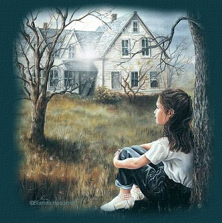
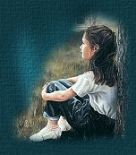
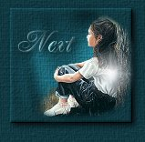

|
?
?

Once upon a
time,
when I was but a girl.
I use to wonder what it'd be
like
to live in a grown-up world.
To have my
daddy give me away
To a man who'd be my spouse
To live so far
from home
In someone else's house.
To have children of my
own
About ten I would think
Running in and out
Calling "mom
I need a drink"!
And call my mom every day
To ask her
motherly advice
To have her hold my babies
A vision oh so
nice
But daddy
couldn't be there
he died before I found the one
who would be
my mate for life
and for him his second son
My mother too
soon left us
To be with her loving spouse
I wish to hear their
voices
Ringing in my house
I don't have ten
children
I'm blessed with only three
They're growing up so
fast
And soon they'll be leaving me
Sometimes I
wish I could go
back to those yesterdays
To sit under a
tree
And dream about tomorrows
that have become
todays.
~~~
Poem by? ~ Fire ~
?
?
?
|

Once
you enter, just run your cursor over the pics to meet my
family! |
?
My Sites first Award!
|